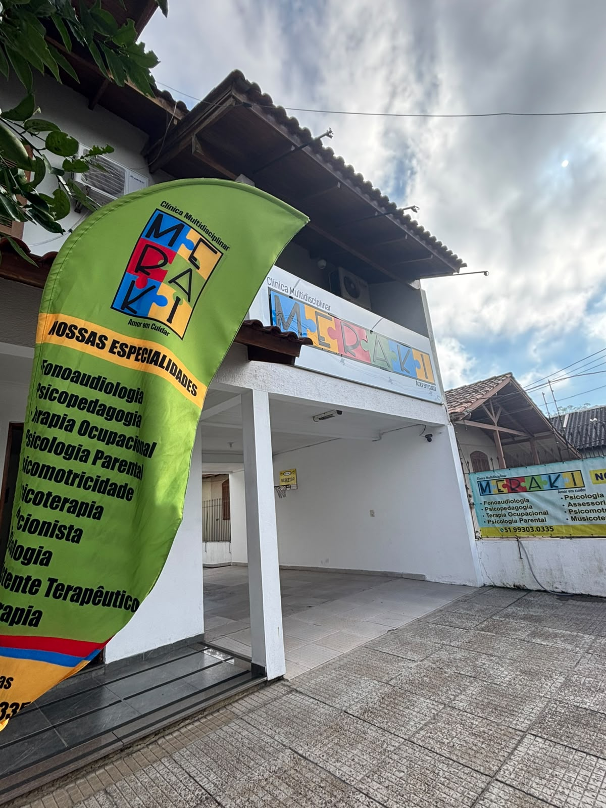
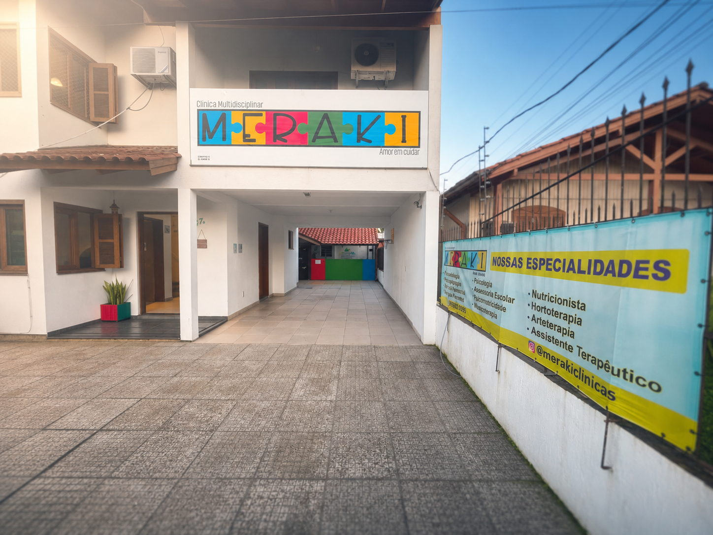
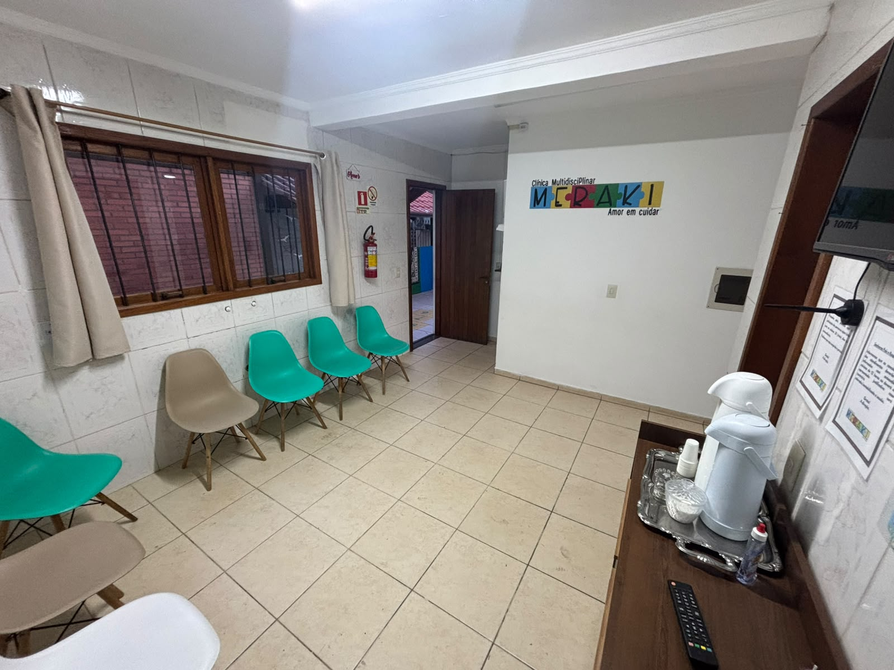
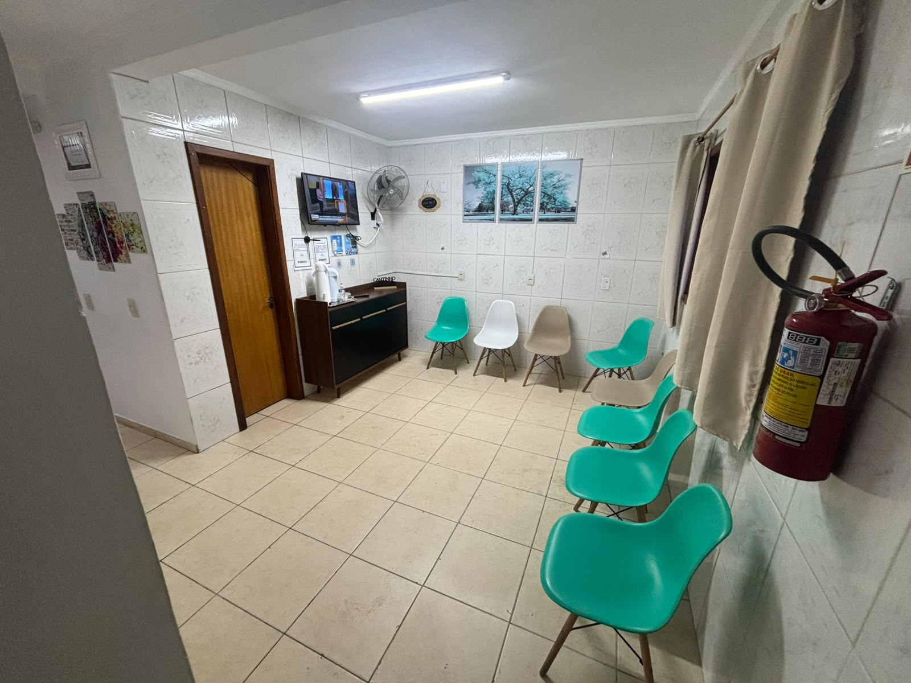
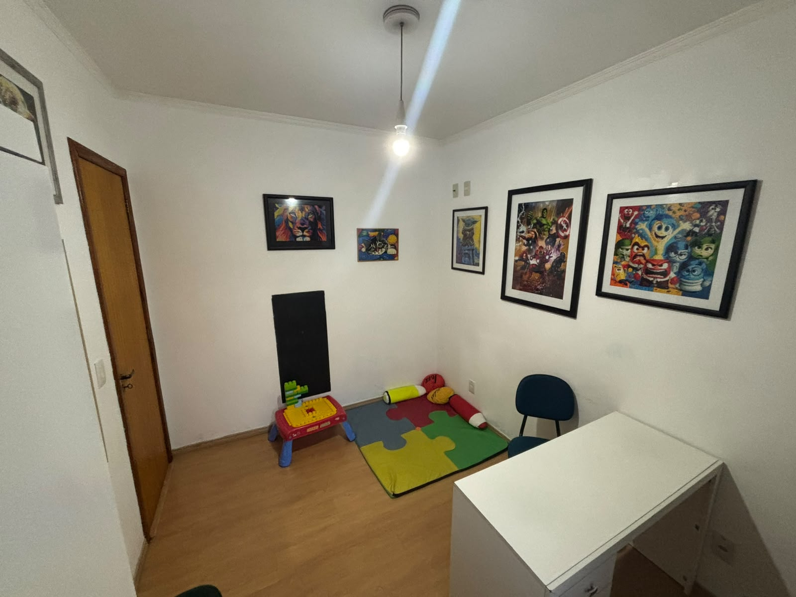
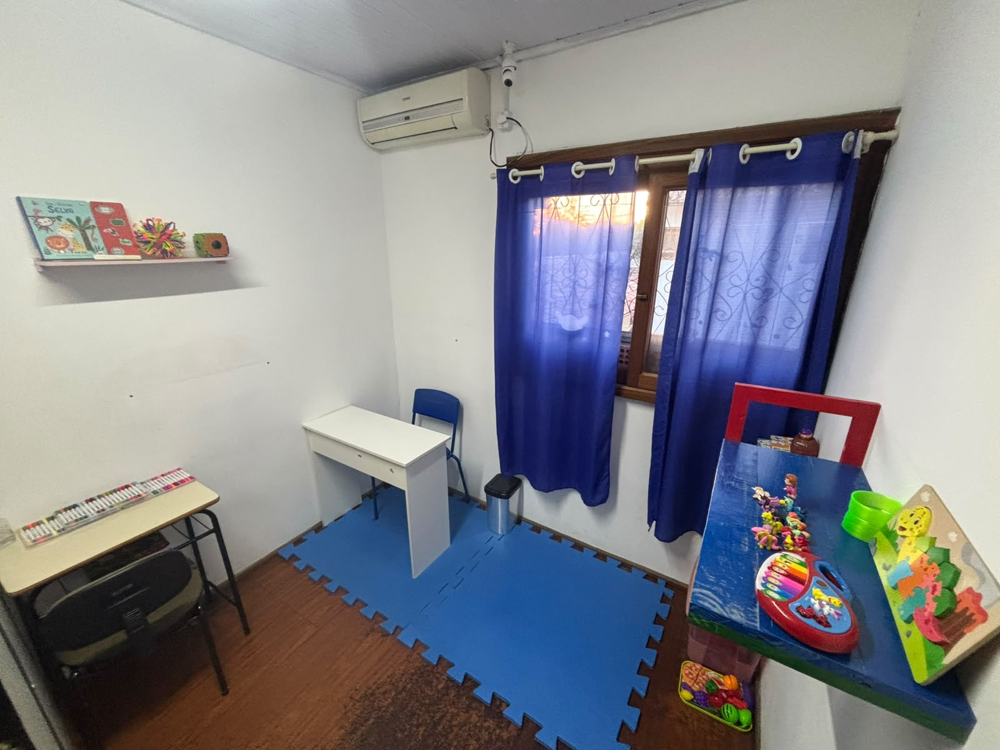
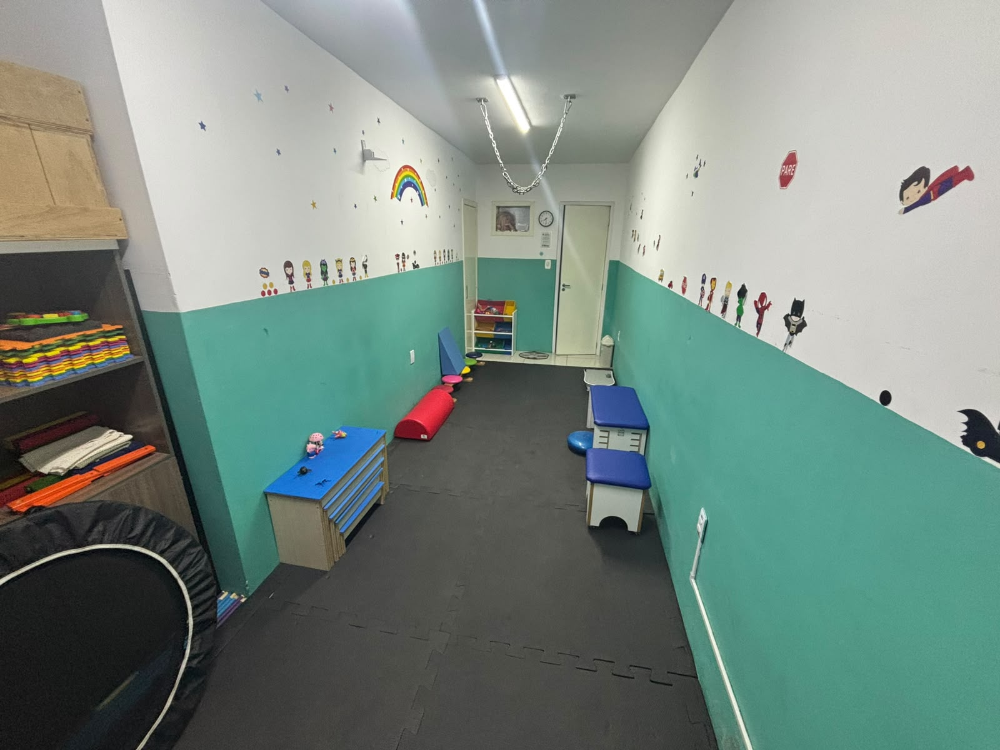
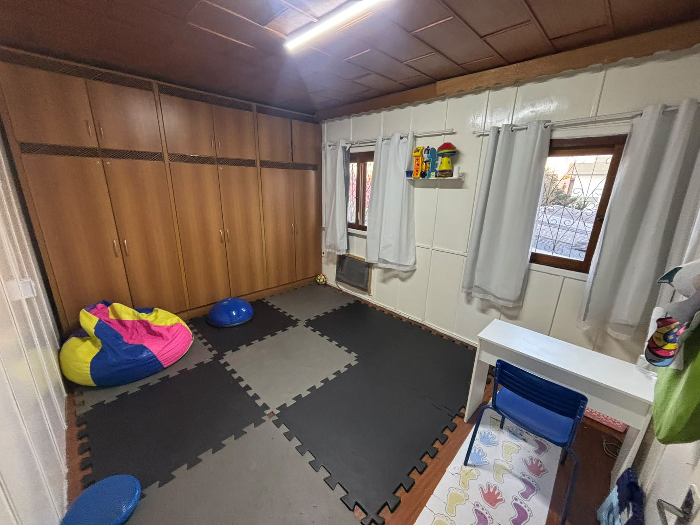
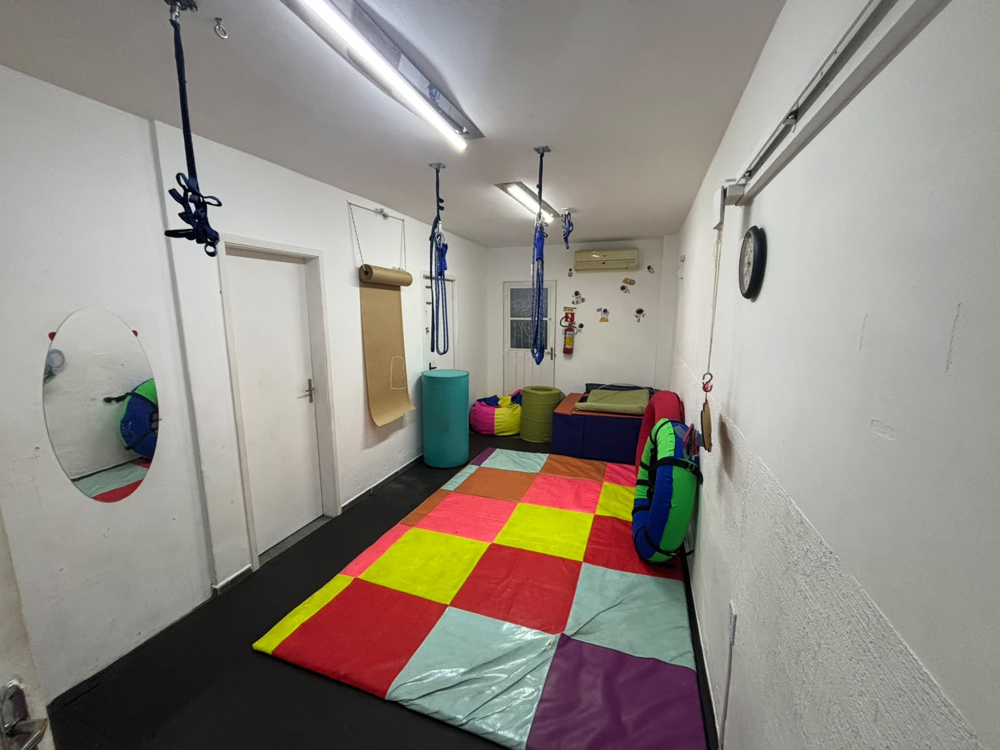
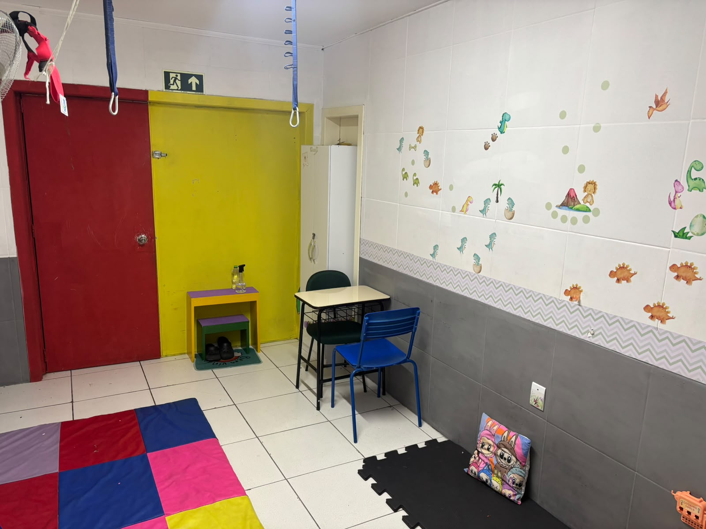

Especializados no desenvolvimento e qualidade de vida, oferecemos atendimento humanizado e integrado para crianças, adolescentes e adultos.

Clínica Meraki, Meraki significa fazer algo com alma, criatividade e amor. Fundada em 2023, a Clínica Meraki nasceu do sonho de criar um espaço acolhedor e especializado para atender crianças, adolescentes e adultos com necessidades especiais, especialmente aqueles com Transtorno do Espectro Autista (TEA). Nossa missão é promover o desenvolvimento e a qualidade de vida por meio de um atendimento humanizado e integrado, utilizando o Método ABA (Applied Behavior Analysis) como base para nossas intervenções terapêuticas. Somos uma clínica multidisciplinar especializada no desenvolvimento e qualidade de vida, oferecendo atendimento humanizado e integrado para crianças, adolescentes e adultos. Possuimos diversas especialidades, como psicologia, fonoaudiologia, terapia ocupacional, psicopedagogia e musicoterapia, entre outras. Todos os profissionais utilizam o Método ABA (Applied Behavior Analysis) em seus atendimentos. Nossa equipe é composta por profissionais altamente qualificados e dedicados a proporcionar o melhor cuidado para nossos pacientes.
Promover a autonomia das crianças e adolescentes, neuroatípicas e com Transtorno do Espectro Autista (TEA) possibilitando a aquisição e o desenvolvimento das habilidades.
Atender com excelência crianças, jovens e suas famílias, comprometendo-se com o desenvolvimento alicerçado na ciência e progresso no processo terapêutico.
Respeito
Amor
Ética
Rede de Apoio
É fundamental para o desenvolvimento e autonomia do paciente. As intervenções focam na comunicação, habilidades sociais, regulação emocional e manejo comportamental.
Serve essencial para o desenvolvimento da comunicação e linguagem. As intervenções abordam a fonética, semântica, sintaxe e pragmática.
Atua na promoção do desenvolvimento e autonomia do paciente. As intervenções focam na comunicação, habilidades sociais, regulação emocional e manejo comportamental.
Focada no desenvolvimento de habilidades acadêmicas e cognitivas. As intervenções abordam a leitura, escrita, matemática e habilidades de estudo.
Utiliza a música como ferramenta terapêutica para promover o desenvolvimento e a qualidade de vida. As intervenções abordam a comunicação, habilidades sociais, regulação emocional e manejo comportamental.
Focada na promoção da saúde e bem-estar do paciente por meio de uma alimentação adequada. As intervenções abordam a avaliação nutricional, planejamento alimentar e orientação dietética.
Focada no desenvolvimento das habilidades motoras e cognitivas do paciente. As intervenções abordam a coordenação motora, equilíbrio, lateralidade e esquema corporal.
Focada na promoção da saúde e bem-estar do paciente por meio de exercícios físicos e técnicas terapêuticas. As intervenções abordam a avaliação física, planejamento de exercícios e orientação para a prática de atividades físicas.
Atua como um facilitador no processo terapêutico, auxiliando o paciente a desenvolver habilidades sociais, emocionais e comportamentais. As intervenções focam na comunicação, habilidades sociais, regulação emocional e manejo comportamental.
Todos nossos profissionais são treinados para oferecer um atendimento compassivo e respeitoso, garantindo que cada paciente se sinta valorizado e compreendido.
Nossa equipe multidisciplinar trabalha em conjunto para desenvolver um plano de tratamento personalizado, garantindo uma abordagem holística e eficaz para cada paciente.
Desenvolvemos um plano terapêutico personalizado para cada paciente, baseado em uma avaliação detalhada e nas necessidades específicas de cada indivíduo, garantindo um tratamento eficaz e direcionado.
Contamos com uma equipe de profissionais altamente qualificados e dedicados a proporcionar o melhor cuidado para nossos pacientes, garantindo um atendimento de qualidade e resultados positivos.
Entre em contato e descubra como podemos ajudar.
Falar no WhatsApp (Clique Aqui)
Clínica Meraki

Clínica Meraki


Sala voltada a atendimentos de Fonoaudiologia, Psicologia, Psicopedagogia, Nutricionista e Musicoterapia.

Sala voltada a atendimentos de Fonoaudiologia, Musicoterpaia e Psicopedagogia.

Sala voltada a atendimentos de Terapia Ocupacional, Fisioterapaia e Psicomotricidade.

Sala voltada a atendimentos de Terapia Ocupacional, Fisioterapaia e Psicomotricidade.

Sala voltada a atendimentos de Terapia Ocupacional, Fisioterapaia e Psicomotricidade.

Sala voltada a atendimentos de Terapia Ocupacional, Fisioterapaia e Psicomotricidade.
Uma clínica multidisciplinar é um modelo de saúde que reúne profissionais de diferentes especialidades sob o mesmo espeço, em vez de atuar de forma isolada. Como exemplo a clinica Meraki que possui uma equipe multidisciplinar composta por psicólogos, fonoaudiólogos, terapeutas ocupacionais, psicopedagogos, musicoterapeutas, nutricionistas, psicomotricistas, fisioterapeutas e assistentes terapêuticos. Esses profissionais trabalham em conjunto para oferecer um atendimento integrado e personalizado aos pacientes. nutricionistas, psicomotricistas e fisioterapeutas colaboram para oferecer um atendimento integrado, garantindo uma visão completa e humanizada do paciente.
O Método ABA (Applied Behavior Analysis) é uma abordagem terapêutica baseada na análise do comportamento. Ele é amplamente utilizado no tratamento de crianças com TEA (Transtorno do Espectro Autista) e tem como objetivo promover o desenvolvimento de habilidades sociais, comunicativas e comportamentais por meio de técnicas específicas de reforço positivo e intervenção personalizada.
O TEA (Transtorno do Espectro Autista) é um transtorno do desenvolvimento que afeta a comunicação e o comportamento. As pessoas com TEA podem ter dificuldades em interagir socialmente, comunicar-se e exibir comportamentos repetitivos.
O atendimento multidisciplinar para pacientes com TEA envolve uma equipe de profissionais de diferentes áreas, como psicologia, fonoaudiologia, terapia ocupacional, psicopedagogia, musicoterapia, entre outras. Esses profissionais trabalham em conjunto para desenvolver um plano de tratamento personalizado, que pode incluir terapias específicas para melhorar a comunicação, habilidades sociais, comportamento e desenvolvimento geral do paciente.
Os sinais de alerta para o TEA podem incluir dificuldades na comunicação verbal e não verbal, falta de interesse em interações sociais, comportamentos repetitivos, resistência a mudanças na rotina, entre outros. É importante observar esses sinais e buscar uma avaliação profissional se houver suspeita de TEA.